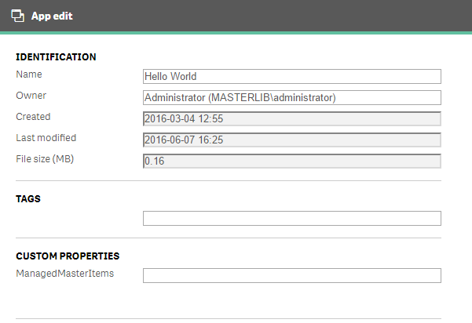
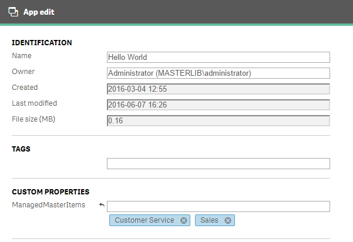

Qlik Sense Server Configuration for Governed Metrics Service
Configuring Qlik Sense Server to use the Governed Metrics Service is a snap. To begin distributing dimensions and measures to Qlik Sense applications, complete the tasks below.
- Create the Metrics Library app.
- Create Metrics Library Field Names & Data Connection.
- Create a reload task for the Metrics Library app.
- Create the ManagedMasterItems custom property and add values
- Apply the ManagedMasterItems custom property values to apps.
Step 1: Create the Metrics Library App
- From the Hub, create an app called "Metrics Library"
- In the Metrics Library app, create a Data Connection to your source data. For more information on Metrics Library configuration and requirements: link
- Reload the Metrics Library app to verify you are connected and loading in the correct data.
- Save and close the app (it is okay to leave in the My Work stream)

Step 2: Create Metrics Library App Field Names & Data Connection
The Metrics Library app is the main application the Governed Metrics Service reads during the update process to apply dimensions and measures to all associated applications. The app requires specific named fields to work properly.
You must create a Data Connection to the data source in the Metrics Library app using the specifications below. The data source can be created manually or you can use the example data that was included in the installation. Please see the example after reviewing the configuration requirements.
The source data for the Metrics Library app - the central list of metrics - can be loaded from any data source. However, when loading the data, the field names must conform to the following and contain the specified information.
Field Name definitions for the Metrics Library data source:
-
ID - The unique ID can be generated in the load script automatically or defined in your data source. There is an example here of how to generate it in the script.
-
MetricSubject - The MetricSubject MUST equal the ManagedMasterItems custom property value. When the Governed Metrics Service reads the Metrics Library app tables, this field is used to identify which apps will receive the dimension or measure.
-
MetricType - This field identifies where in the Master Library a metric will be added.
-
MetricName - The MetricName field contains the friendly name displayed in the Master Library for the dimension or measure.
-
MetricDescription - This field contains a description for the dimension or measure. When a user clicks on a Master Library item, the description will appear in the pop user interface.
-
MetricFormula - The MetricFormula contains the dimension field name or the expression to be used for the dimension or measure.
-
MetricOwner - This field identifies who owns the metric for informational purposes.
-
MetricTags - The MetricTags page is a semicolon delimited list of descriptive tags to be added to the dimension or measure Master Library item to aid search.
Sample Source Data Table
| ID | MetricSubject | MetricType | MetricName | MetricDescription | MetricFormula | MetricOwner | MetricTags |
|---|---|---|---|---|---|---|---|
| 1 | Customer Service | Measure | % Resolved in SLA | Percentage of Tickets handled within SLA | Sum({< [Call Ctr Days to Resolve] = {'0', '1', '2', '3', '4', '5', '6'} > } [Call Ctr Call #])/sum([Call Ctr Call #]) | Linda Lee | Key KPI;Call |
| 2 | Sales | Dimension | Country | Customer Country | Customer Country | Chad Johnson | Customer |
| 3 | Finance | Measure | Costs | Cost Amount | sum([Sales Costs]) | Gordon Wyse | Cost |
MetricsLibrary:
LOAD
RowNo() AS ID, //ID does not exist in source data so we generate it in the script
MetricSubject,
MetricType,
MetricName,
MetricDescription,
MetricFormula,
MetricOwner,
MetricTags
FROM [lib://AttachedFiles/MetricsLibrary.csv]
(txt, codepage is 1252, embedded labels, delimiter is '\t', msq);
Step 3: Create a reload task for the Metrics Library app
After creating the Metrics Library app, a reload task needs to be created for it so the Governed Metrics Service can request updated metrics before applying them to apps.
- Navigate to the Metrics Library app in QMC and click "More actions"
- Select the "Create new reload task option"
- Name the task the same value entered in the task name provided during the installation of the GMS itself. "Reload task of Metrics Library" is the default.
- Save the task and exit.


Step 4: Create the ManagedMasterItems custom property and add values
In order to identify the applications that will receive metrics, the ManagedMasterItems custom property contains the values to be applied to apps.
Looking back on the sample source data table above, observe the MetricsSubject column. This column directly corresponds to the values entered into the ManagedMasterItems custom property. For the different metrics supplied from the data source, a MetricsSubject identifies the apps that will receive the dimension or measure in the master library.
To create the ManagedMasterItems custom property:
- Navigate to the Custom Properties menu item in the QMC.
- Click "Create new" and provide a name for the custom property that matches the value entered in the configuration page of the Governed Metrics Service install. In this example we use "ManagedMasterItems"
- Select the "Apps" resource checkbox.
- Add values to the custom property that match values in the MetricsSubject field and click apply.

Step 5: Apply the ManagedMasterItems custom property values to apps
Now that the custom property for populating metrics to applications exists, the values need to be set on applications for when the Governed Metrics Service performs an update.
Do not apply ManagedMasterItems custom property values to the Metrics Library application.
To add a custom property value to an app:
-
Go back to the Apps section of the QMC and double click on an App reference in the list.
-
When the app screen appears, activate the Custom properties section by clicking on the term located on the right side of the screen.
 -
Click on the dialog box next to ManagedMasterItems (or the custom property created for GMS) and type or select the custom property values to apply to the app.
